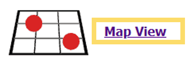
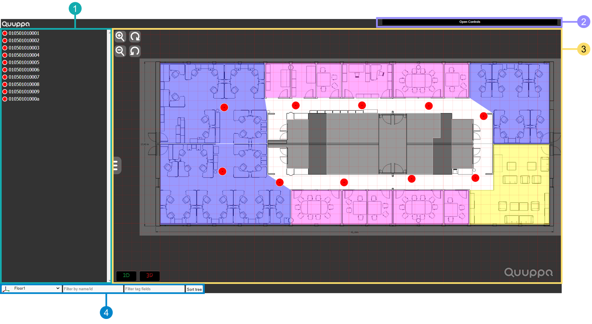
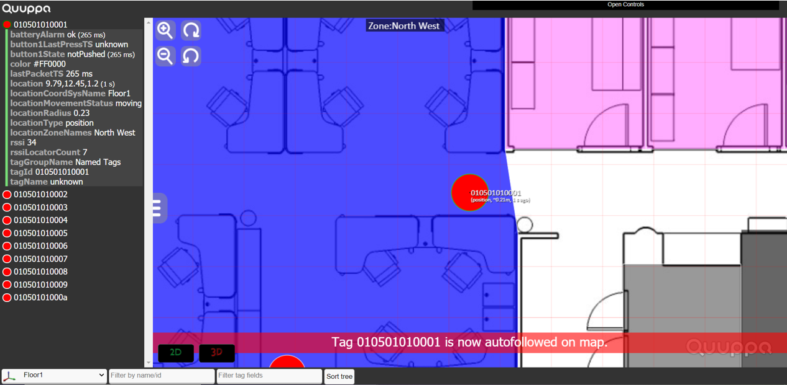
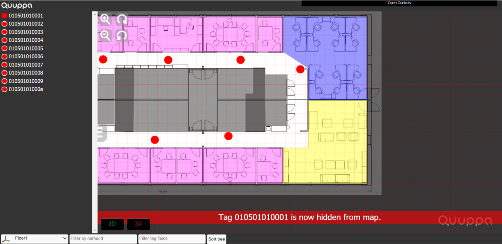
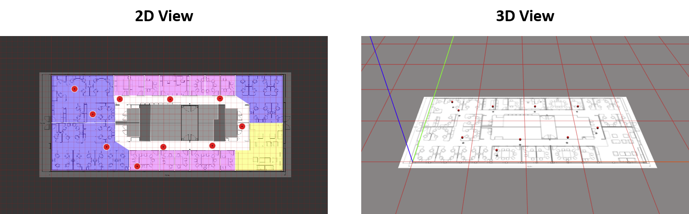
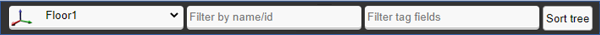

Map View
The Positioning Engine Web Console map view is a visual representation of your Quuppa system in action, built using the Quuppa APIs. You can see the tags moving around on the map in real time, view the available data for specific tags and edit the map controls to adapt the map view more to your liking. The map view is intended as an example of the type of map that you can create for your own end customer application.
To access the map view, click on the Map View link at the top of the Positioning Engine Web Console's main page.

The map view page can be divided into the following sections:

- Tag
Tree - A list of tag IDs for all of the tags that can currently be seen by
the QPE. By clicking on the tag ID, you can access additional information about any
of the tags (e.g. the tag name or state of the battery) .
- To see more information about a specific tag, click on the tag ID number for that tag in this panel. If you have defined a name for the tag in the project file using the Quuppa Site Planner, then the name will be displayed next to the dot on the map when the tag is selected. If you have not specified a name, the tag ID will be displayed in the map view instead. You can use this to identify which tag is the one that you selected. For more details, please see the Tag Tree Definitions section.
- To follow a specific tag around the map, always keeping it in view,
you can click on the red dot to the left of the tag ID number. A red banner
will appear at the bottom of the map view to indicate that the autofollow
feature is now on.

- To hide a specific tag from the map, click on the red dot to the left
of the tag ID number twice (the first click will activate the autofollow
feature described above). A red banner will appear at the bottom of the map
view to indicate that the tag has been successfully hidden from the
map.

- Map View Controls - By clicking on the Open Controls bar in the upper right corner, a toolbar of map controls will open. You can use these controls to customise how the map view looks to better suit your needs. For more information, please see the Map View Controls section of this guide.
- Map - The map is the visual representation of your deployment on a digital
map. Here you can see the tags moving around the space in real time. If you
submitted the background image to Quuppa Customer Portal together with the project
file, it will also be visible.
- To see the name of a specific tag on the map, you can either hover your mouse over it to show the tag name momentarily or you can click on the tag (or its ID in the tag list) to keep the name visible. If you have not defined a name for the tag in the project file, the tag ID will be shown instead of the tag name.
- To see the names of other elements on the map (e.g. zones), hover your mouse over the area.
- To zoom in and out and rotate the map, use the buttons (plus, minus, rotate clockwise and rotate anticlockwise) in the top left corner of the map area. Alternatively, you can also use the scroll wheel on your mouse or your touchpad to zoom in and out of the map. A handy tip is to place the cursor where you want to zoom in to target the zoom.
- To move the map in the map view, you can left-click on the map and drag it to the desired direction.
- To change between a 2D and a 3D visualisation of the map, use the
2D and 3D buttons at the
bottom left of the map.

Note: This is just a visualisation, and is not related to the tracking area dimensions that you have set for your project. Clicking 3D will not turn your 2D tracking project into the 3D tracking project.
- Map View Filters - The filters at the bottom left of the page allow you to
select which data is shown on the map view page (including both in the tag list and
on the map), so that it's easier for you to find the information that is of value
for you. You can select which coordinate system is shown, filter tags by their name
or ID number and which tag fields are shown.
